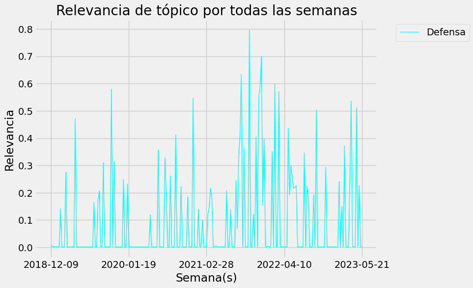
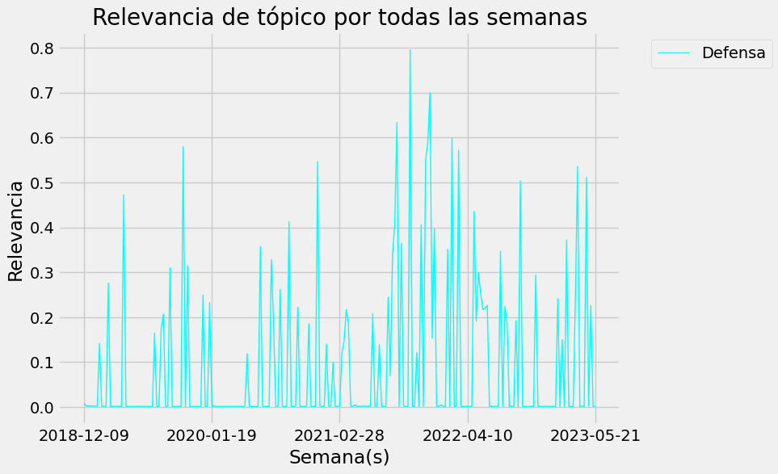
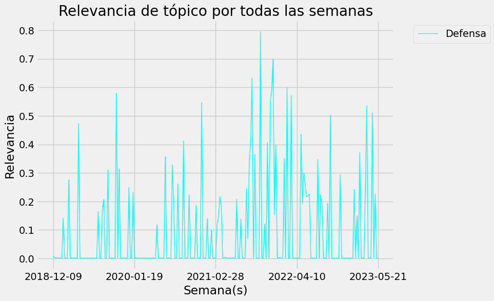

Resultados obtenidos
En esta sección se comparten los datos obtenidos y las observaciones que logramos captar a través del estudio de los diferentes textos.
Visualización con herramienta
Continuamos con los siguientes pasos en el procesamiento principal: Obtener el vocabulario de términos, obtener las frecuencias de términos en el primer documento, crear una lista de tuplas que contienen el término y su frecuencia en el primer documento, ordenar la lista de tuplas por la frecuencia descendente, obtener las 10 palabras clave más importantes para el primer documento. Para la ultima visualizacion en el notebook, se siguieron los siguientes pasos: Tokenizar los documentos utilizando el tokenizador de Penn Treebank, Crear un diccionario de términos a partir de los documentos, Crear una representación de la bolsa de palabras de los documentos, Entrenar un modelo LDA con 10 tópicos, Imprimir y Crear una visualización con pyLDAvis los tópicos.
LDA (Latent Dirichlet Allocation) es un modelo probabilístico utilizado para identificar temas o tópicos en un conjunto de documentos. La idea principal es que cada documento puede estar compuesto por múltiples tópicos, y cada tópico está caracterizado por una distribución de palabras. El objetivo es inferir la distribución de tópicos en los documentos y la distribución de palabras en cada tópico.
LDA (Latent Dirichlet Allocation) es un modelo probabilístico utilizado para identificar temas o tópicos en un conjunto de documentos. La idea principal es que cada documento puede estar compuesto por múltiples tópicos, y cada tópico está caracterizado por una distribución de palabras. El objetivo es inferir la distribución de tópicos en los documentos y la distribución de palabras en cada tópico.
Datos adicionales
Con el fin de analizar la diferencia entre las keywords obtenidas a traves de las semanas utilizando nuestro proceso, pudimos formar una gráfica para ilustrar las diferencias de topicos por semana. La cual nos puede ayudar a visualizar la manera en que un topico es que tan similar o que tan distinto a los otros topicos. Con estos datos se concluyen las observaciones.
Con estos datos se concluyen las observaciones.
Proyecto PLN: Universidad de Sonora - 2023